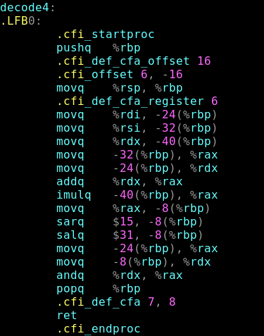

Про ассемблер
Ассемблер — это язык программирования низкого уровня, который предоставляет программистам возможность прямого управления аппаратными средствами компьютера. В отличие от языков высокого уровня, таких как Python или Java, ассемблер требует точного понимания архитектуры процессора и системы команд, что делает его сложным для изучения и использования. Однако, именно благодаря этому ассемблер позволяет писать программы с максимальной производительностью и минимальными ресурсными затратами, что особенно важно в системах реального времени и встраиваемых системах.
Услуги репетитора по языку ассемблер могут быть невероятно полезны для студентов и профессионалов, стремящихся углубить свои знания в области системного программирования. Опытный репетитор поможет понять основные концепции и техники работы с ассемблером, такие как адресация памяти, управление регистрами и использование макроинструкций. Также репетитор сможет объяснить особенности различных процессорных архитектур, что является ключевым для написания эффективного и оптимизированного кода.
Занятия с репетитором по ассемблеру включают в себя не только теоретическое обучение, но и практические задания, которые помогут закрепить полученные знания. Репетитор может предложить индивидуальный подход, адаптируя программу обучения под конкретные цели и уровень подготовки ученика. Это позволяет быстрее освоить язык и начать применять его на практике для решения реальных задач, будь то разработка драйверов, создание операционных систем или оптимизация приложений для встраиваемых устройств.
Проекты
-  Занятия с репетитором по ассемблеру включают в себя не только теоретическое обучение
- Занятия с репетитором по ассемблеру включают в себя не только теоретическое обучение
- Занятия с репетитором по ассемблеру включают в себя не только теоретическое обучение
- Занятия с репетитором по ассемблеру включают в себя не только теоретическое обучение
- Занятия с репетитором по ассемблеру включают в себя не только теоретическое обучение
Обучение

Услуги репетитора по языку ассемблер могут быть невероятно полезны для студентов и профессионалов, стремящихся углубить свои знания в области системного программирования. Опытный репетитор поможет понять основные концепции и техники работы с ассемблером, такие как адресация памяти, управление регистрами и использование макроинструкций. Также репетитор сможет объяснить особенности различных процессорных архитектур, что является ключевым для написания эффективного и оптимизированного кода.
Занятия с репетитором по ассемблеру включают в себя не только теоретическое обучение, но и практические задания, которые помогут закрепить полученные знания. Репетитор может предложить индивидуальный подход, адаптируя программу обучения под конкретные цели и уровень подготовки ученика. Это позволяет быстрее освоить язык и начать применять его на практике для решения реальных задач, будь то разработка драйверов, создание операционных систем или оптимизация приложений для встраиваемых устройств.
Чуть обо мне
Услуги репетитора по языку ассемблер могут быть невероятно полезны для студентов и профессионалов, стремящихся углубить свои знания в области системного программирования. Опытный репетитор поможет понять основные концепции и техники работы с ассемблером, такие как адресация памяти, управление регистрами и использование макроинструкций. Также репетитор сможет объяснить особенности различных процессорных архитектур, что является ключевым для написания эффективного и оптимизированного кода.
Занятия с репетитором по ассемблеру включают в себя не только теоретическое обучение, но и практические задания, которые помогут закрепить полученные знания. Репетитор может предложить индивидуальный подход, адаптируя программу обучения под конкретные цели и уровень подготовки ученика. Это позволяет быстрее освоить язык и начать применять его на практике для решения реальных задач, будь то разработка драйверов, создание операционных систем или оптимизация приложений для встраиваемых устройств.